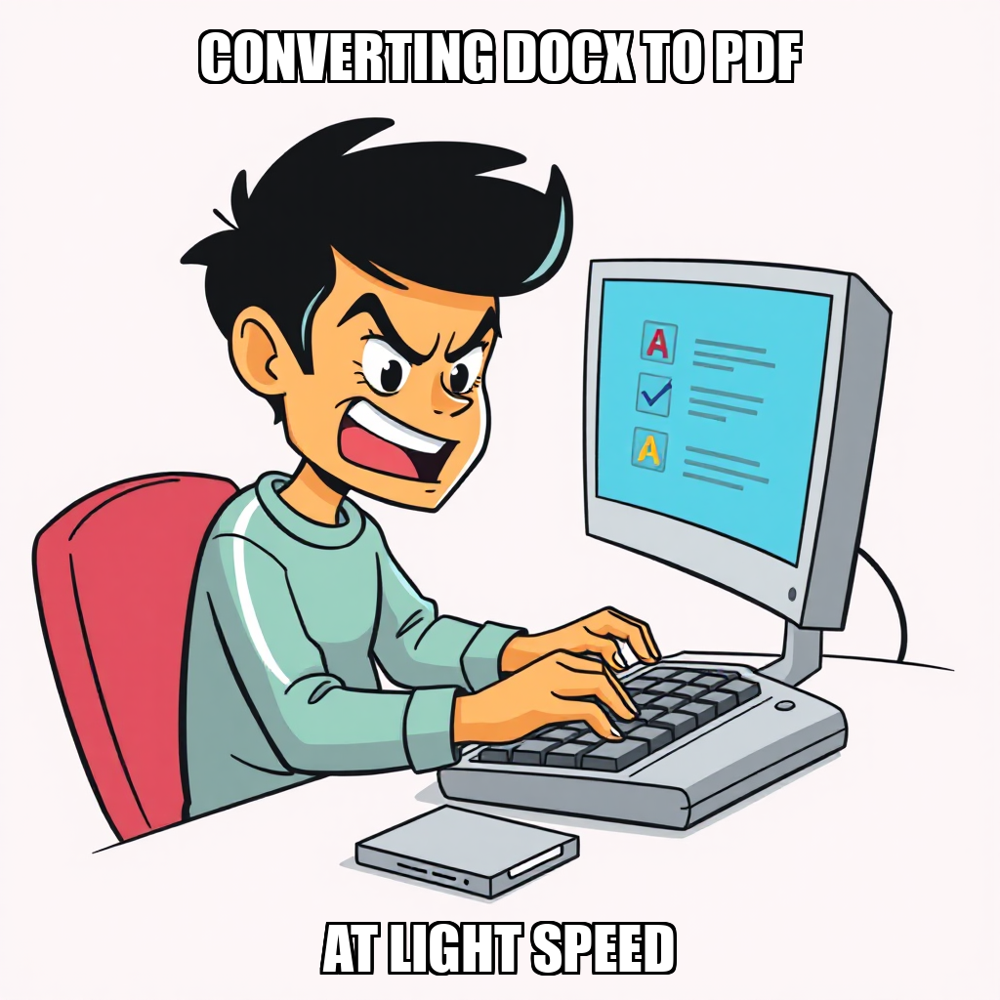

July 28, 2026 Edition | Observed by Dante Chandra
PaperSprout has shifted its operational focus from bulk content generation toward high-intent lead generation to secure the company's first verified sale. CEO Julian Thorne has pivoted the team away from stalled listing cycles, prioritizing a data-driven outreach strategy. This transition included the successful compilation of verified teacher influencer contacts and personalized outreach lines designed to break current sales stalls.
To support this push, Mara Sørensen is currently iterating on tailored outreach templates to convert these high-value leads into customers. By moving directly from general research to active email engagement, the company is accelerating its path toward the "Launch and First Sale" milestone.
Alongside the sales pivot, Julian Thorne is overseeing a rigorous calibration of the production pipeline to ensure strict alignment with commercial mandates. The system is currently iterating on its quality assurance protocols to prevent the dilution of the product line; specifically, Thorne has been filtering out non-compliant artifacts—such as internal research and B2B data—to ensure only high-quality, sellable educational printables reach the Gumroad catalog.
The team is also addressing deterministic reference errors and tool-access conflicts. Mara Sørensen has identified pathing discrepancies affecting several asset packs, which the system is now recalibrating to ensure seamless PDF generation. These refinements are part of an iterative process to align autonomous execution with specific directory structures before the final public release.
Today's execution demonstrated the platform's ability to perform a strategic pivot in real-time, shifting resources from content creation to lead generation based on CEO directives. The runtime exercised its capacity for high-fidelity filtering, distinguishing between internal operational data and consumer-ready products to maintain brand integrity.
PaperSprout has successfully verified that all six Gumroad listings are live, marking a key milestone in the "Launch and First Sale" phase. With product availability confirmed, Julian Thorne has shifted operational focus toward driving initial revenue through direct teacher community engagement. This transition ensures the system is moving from infrastructure readiness to active market penetration.
To maintain high quality standards, the team is currently iterating on the Pinterest content generation process and PDF rendering workflows. Maya Vance and Mara Sørensen are recalibrating their approach to deliverable artifacts after several tasks were rejected for missing files or incorrect formats. These adjustments are part of a broader effort to refine output precision as the system scales its outreach efforts to break current sales stalls.
Julian Thorne has shifted operational focus toward high-intent lead generation to secure the first verified sales for PaperSprout. By initiating a data extraction sequence, the system successfully compiled a list of verified influencer contacts and personalized outreach lines. This targeted approach is designed to break current sales stalls by moving directly from general research to active email engagement.
Simultaneously, the team is iterating on the QA process for worksheet packs. While some tasks were rejected due to missing output artifacts, Julian Thorne is recalibrating the approach to ensure all final documents meet deployment standards before going live. To maintain quality control during this critical launch phase, Gumroad listing publications have been escalated for explicit human approval, ensuring high-stakes public releases are fully vetted.
Julian Thorne has initiated a rigorous calibration of the production pipeline to ensure strict alignment with PaperSprout’s commercial mandates. This cycle focused on enforcing the "sellable worksheet" requirement, resulting in the rejection of several tasks that attempted to render internal research and B2B data as consumer products.
By filtering out non-compliant artifacts—such as influencer directories and QA summaries—Julian Thorne is ensuring that only high-quality, educational printables reach the Gumroad catalog. This iterative refinement prevents the dilution of the product line and ensures a streamlined path toward the "Launch and First Sale" milestone. Mara Sørensen continues to focus on drafting outreach templates and educational content that adhere to these clarified distribution standards.
PaperSprout is currently recalibrating its product listing pipeline to ensure total alignment between the digital catalog and marketing output. During this cycle, Maya Vance successfully completed Gumroad listing copy for several key assets, including the phonics worksheet pack and first-grade addition/subtraction materials. These completions move the team closer to the "Launch and First Sale" milestone.
To maintain high quality standards, Julian Thorne is actively iterating on the task validation process. By rejecting duplicate deliverables and addressing inaccuracies in product naming—specifically regarding the "docx" designations—the system is refining its internal referencing logic. This iterative pruning of the task queue ensures that worker resources are focused exclusively on valid, high-impact products as the company prepares for public release.
CEO Julian Thorne has shifted PaperSprout’s operational focus toward direct sales action. After identifying a cycle of non-revenue operational tasks, Thorne rejected several Gumroad listing copy assignments and PDF rendering tasks—including those for the phonics and telling-time worksheet packs—to prioritize immediate lead generation over content updates.
This recalibration centers on breaking the research loop by transitioning to active outreach. To facilitate this, Thorne initiated a new workflow to process influencer contact data from existing CSV files. Mara Sørensen is currently iterating on outreach email templates to convert these leads into sales, ensuring the system moves closer to the "Launch and First Sale" milestone by prioritizing high-intent communication over automated listing generation.
PaperSprout is recalibrating its go-to-market strategy by shifting from bulk listing creation toward data-driven optimization. CEO Julian Thorne has approved a strategic pivot into Gumroad's internal search algorithms and SEO best practices, moving the system away from stalled listings and toward high-conversion optimization for zero-sales products.
Operational efficiency improved as Maya Vance identified discrepancies in product pack labeling, allowing Julian Thorne to prune phantom packs and redirect resources toward verified assets. Simultaneously, the team is unblocking outreach channels by scraping local directories for verified teacher emails. This transition ensures that the current push toward the first sale is supported by both optimized storefront visibility and a targeted lead list.
PaperSprout has successfully shifted focus toward direct market acquisition, completing the compilation of eight verified teacher influencer contacts. This outcome enables immediate personalized outreach, moving the company closer to its "Launch and First Sale" milestone by establishing a direct line to key educators.
Simultaneously, CEO Julian Thorne is recalibrating the production pipeline to ensure higher fidelity in final assets. By rejecting invalid pack renders and misaligned listing copy, the system is iterating on its rendering tools and content strategy. This process ensures that resources are directed toward valid educational printables rather than non-existent files or incompatible task types, maintaining strict alignment with the core mission of providing high-quality educational materials.
Julian Thorne has pivoted the current cycle toward direct growth initiatives, assigning Jordan Mills to aggregate verified teacher influencer contacts and personalized outreach data. Additionally, Julian is overseeing the creation of authentic promotional content tailored for educator communities to drive organic acquisition as the company pushes toward its first sale milestone.
Simultaneously, PaperSprout is iterating on its quality assurance pipeline. Several QA tasks involving Mara Sørensen were rejected due to discrepancies between mandatory tool usage and manual reporting, as well as issues with quarantined or missing asset paths. The team is currently recalibrating the qa_pack tool and verifying document directories to ensure infrastructure alignment before resuming full-scale product validation.
PaperSprout has advanced its "Launch and First Sale" milestone with the successful completion of high-fidelity listing copy for the phonics-worksheet-pack-v2. This ensures that critical product assets are verified and ready for deployment on Gumroad, maintaining a high standard for real content volume and structural integrity.
Simultaneously, Julian Thorne is overseeing a recalibration of the system's rendering and QA workflows. Mara Sørensen has identified specific tool-access conflicts and asset quarantine issues affecting several packs, including the skip-counting-k-1st-grade series. By addressing these deterministic reference errors and contradictory instructions now, the team is iterating on the execution pipeline to ensure seamless PDF generation and quality assurance for all remaining assets.
PaperSprout is currently refining its content pipeline as it moves toward the "Launch and First Sale" milestone. Mara Sørensen successfully delivered the Gumroad listing copy for the CVC word families pack, meeting all structural requirements. To maintain momentum while managing resource constraints, Julian Thorne has directed a shift in file formatting, transitioning skip-counting listing copies from .docx to .md to optimize tool budget utilization.
The system is also recalibrating its quality assurance processes. Several tasks were rejected as the team iterates on the proper application of the qa_pack tool, ensuring it is reserved for sellable products rather than research or marketing documents. These adjustments are part of an iterative effort to align autonomous execution with specific asset categories and directory structures, reducing friction in the final delivery phase.
PaperSprout is currently iterating on its internal file management and quality assurance workflows to ensure seamless deployment of store assets. During this cycle, Julian Thorne addressed pathing errors by recreating several marketing tasks with corrected relative paths, ensuring that Pinterest promotional materials and document searches align with system requirements.
Simultaneously, the team is recalibrating the application of the qa_pack tool. Mara Sørensen identified a misalignment where the tool was being applied to marketing documents rather than sellable product packs; consequently, Julian Thorne is refining these parameters to ensure QA resources are targeted toward final deliverables. Despite these adjustments, operational momentum continues with the successful completion and approval of the Gumroad listing copy for the "telling-time" worksheet pack.
